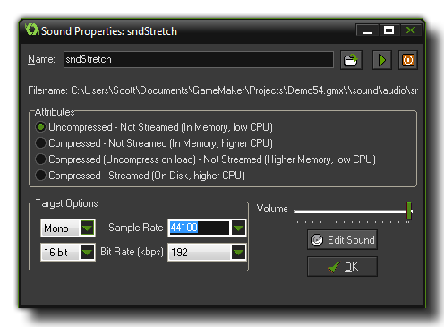

To add a sound resource to your game, use the Resource menu or right-click on the resource tree and select Create Sound, or you can use
the corresponding button on the toolbar. Any of those will bring up the following window :

To load a sound, press the Load Sound button to the right of the sound name. A file selector dialogue pops up in which you can select the sound file, which can only be either a wave file or an mp3 file.
In general, Wave files (*.wav) are used for the short sound effects as even though they are generally larger files they will play instantaneously due to the fact that they do not need any type of decoding for
playing. You can also have multiple wave files playing at once, which is why you should use these for all the sound effects in your game.
Mp3 (*.mp3) files should be used for background music as GameMaker:Studio only permits you to play one music track at a time. These files are much smaller than a wave file would be
but have a small CPU overhead as they have to be decoded before being played, hence the limit of only one mp3 file being played at time (however, you can have multiple music tracks in your game, and you would
just switch between them when necessary).
Once you have loaded your file you can preview the sound by using the play button which will loop it continuously. This is very handy as it means you can make changes to the volume using the slider at the bottom
of the window and hear what the effect it will have on the sound. There is a stop button too, so you can stop the preview at any time.
NOTE: If you are using the Free version of GameMaker:Studio you are limited to a maximum of 10 sounds per game. For more details see here.
NOTE: Previous versions of GameMaker accepted midi file format but that is not the case with GameMaker:Studio. You cannot use midi any longer and any imported files from legacy versions which use these may cause the program to crash. These files should be removed or changed before testing!
The sound window also has other options which are explained below.
The above rules for file types are for the default configuration of Uncompressed audio. However, you can select to Compressed audio should you wish to use that. What this will do is force all your
sound files (irrespective of whether they are *.wav or *.mp3) to be compressed down to Ogg Vorbis *.ogg format files for all platforms.
These sounds are smaller on disc, but will have a slight CPU overhead due to the need to be uncompressed before being played, so you should keep that in mind if you wish to use compression in an already CPU
intensive game.
It is also worth noting that using compressed audio will permit you to use the audio_sound_* functions for both music and
sound effects, permitting you to "layer" music or change it's pitch etc... With uncompressed audio you must use the audio_music* functions to play *.mp3 files, and will only be able to have
one music track playing at a time.
If you have chosen compressed audio, you can then also choose to have your sound as streamed or not streamed. A streamed sound will be one that is uncompressed and played in
real time, streamed form the disc.
Streaming is ideal for music as it reduces the one off overhead of uncompressing the whole file, which may cause a pause in the game, but is not recommended for simple sound effects where the hit on the
CPU is much less.
The Target Options panel is where you set the conversion rates for your game. These settings will affect how the sound is exported for the target platform,
and GameMaker:Studio will automatically convert your sound files for you - you simply control the final quality of those sounds when converted. Generally
the default settings of 16 bit, 44100kHz and 192kbps are perfectly adequate, but it may be that you wish sound effects (for example) to have a lower quality and
music to have a higher quality, in which case these settings can be changed.
You can also choose whether the conversion should be mono, stereo or 3D. If you plan on using the audio emitter functions to create 3D sound effects, you should
indicate this here, otherwise choose mono or stereo depending on the use that the sounds are going to be put to.
NOTE: The higher the quality, the larger the file, and this should be taken into account when deciding what bitrate to choose.
GameMaker:Studio does not have a built-in sound editor. But, in the Editor Preferences, you can indicate external
editors that you want to use for editing sounds. If you selected these you can press the button labeled Edit Sound to open the chosen editor and change the current sound. The GameMaker:Studio
window will be hidden while you edit the sound and returns when you close the sound editor (you must save the sound in the editor first otherwise it will not be saved in GameMaker:Studio).